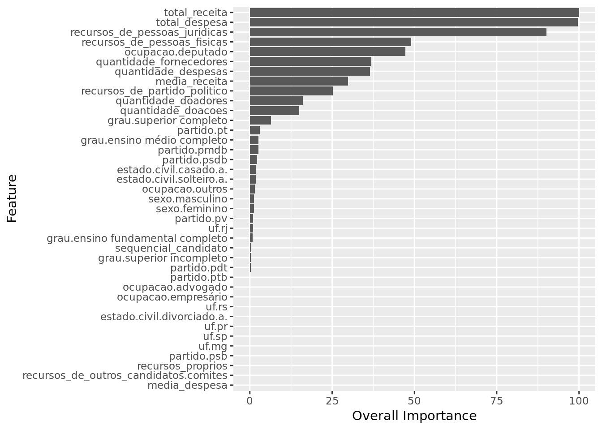

Analysis with Regularization on Brazilian elections
Introduction
Data Analysis with multivariate Linear Regression on data about polls for the 2006 and 2010 elections in Brazil for the lower house (Câmara Federal de Deputados). Data was taken from the TSE portal and encompasses approximately 7300 candidates.
Data Overview
The variables
The response variable is the variable that you are interested in reaching conclusions about.
A predictor variable is a variable used to predict another variable.
Our response variable will be "votos", we want to study how well the predictor variables can help predict its behavior and how they impact in the linear regression.Each item corresponds to a candidate, the attributes of each item are as follows:
- ano : Year at which the election took place.
- sequencial_candidato : Sequential ID to map the candidates
- nome : Name of the candidate
- uf : Federate state to which the candidate belongs.
- partido : Political party to which the candidate belongs.
- quantidade_doacoes : Number of donations received during political campaign.
- quantidade_doadores : Number of donators that contributed to the candidate’s political campaign.
- total_receita : Total revenue.
- media_receita : Mean revenue.
- recursos_de_outros_candidatos.comites : Revenue coming from other candidate’s committees.
- recursos_de_pessoas_fisicas : Revenue coming from individuals.
- recursos_de_pessoas_juridicas : Revenue coming from legal entities.
- recursos_proprios : Revenue coming from personal resources.
- recursos_de_partido_politico : Revenue coming from political party.
- quantidade_despesas : Number of expenses.
- quantidade_fornecedores : Number of suppliers.
- total_despesa : Total expenditure.
- media_despesa : Mea expenditure.
- cargo : Position.
- sexo : Sex.
- grau : Level of education.
- estado_civil : Marital status.
- ocupacao : Candidate’s occupation up to the election.
- votos : Number of votes received.
Loading Data
data <- readr::read_csv(
here::here('evidences/train.csv'),
progress = FALSE,
local=readr::locale("br"),
col_types = cols(
ano = col_integer(),
sequencial_candidato = col_character(),
quantidade_doacoes = col_integer(),
quantidade_doadores = col_integer(),
total_receita = col_double(),
media_receita = col_double(),
recursos_de_outros_candidatos.comites = col_double(),
recursos_de_pessoas_fisicas = col_double(),
recursos_de_pessoas_juridicas = col_double(),
recursos_proprios = col_double(),
`recursos_de_partido_politico` = col_double(),
quantidade_despesas = col_integer(),
quantidade_fornecedores = col_integer(),
total_despesa = col_double(),
media_despesa = col_double(),
votos = col_integer(),
.default = col_character())) %>%
mutate(sequencial_candidato = as.numeric(sequencial_candidato),
estado_civil = as.factor(estado_civil),
ocupacao = as.factor(ocupacao),
partido = as.factor(partido),
grau = as.factor(grau),
sexo = as.factor(sexo),
uf = as.factor(uf))
data %>%
glimpse()## Observations: 7,476
## Variables: 24
## $ ano <int> 2006, 2006, 2006, 2006, 20…
## $ sequencial_candidato <dbl> 10001, 10002, 10002, 10002…
## $ nome <chr> "JOSÉ LUIZ NOGUEIRA DE SOU…
## $ uf <fct> AP, RO, AP, MS, RO, PI, MS…
## $ partido <fct> PT, PT, PT, PRONA, PT, PCO…
## $ quantidade_doacoes <int> 6, 13, 17, 6, 48, 6, 14, 2…
## $ quantidade_doadores <int> 6, 13, 16, 6, 48, 6, 7, 2,…
## $ total_receita <dbl> 16600.00, 22826.00, 158120…
## $ media_receita <dbl> 2766.67, 1755.85, 9301.22,…
## $ recursos_de_outros_candidatos.comites <dbl> 0.00, 6625.00, 2250.00, 0.…
## $ recursos_de_pessoas_fisicas <dbl> 9000.00, 15000.00, 34150.0…
## $ recursos_de_pessoas_juridicas <dbl> 6300.00, 1000.00, 62220.80…
## $ recursos_proprios <dbl> 1300.00, 201.00, 59500.00,…
## $ recursos_de_partido_politico <dbl> 0, 0, 0, 0, 0, 0, 0, 0, 11…
## $ quantidade_despesas <int> 14, 24, 123, 8, 133, 9, 17…
## $ quantidade_fornecedores <int> 14, 23, 108, 8, 120, 9, 10…
## $ total_despesa <dbl> 16583.60, 20325.99, 146011…
## $ media_despesa <dbl> 1184.54, 846.92, 1187.09, …
## $ cargo <chr> "DEPUTADO FEDERAL", "DEPUT…
## $ sexo <fct> MASCULINO, FEMININO, FEMIN…
## $ grau <fct> ENSINO MÉDIO COMPLETO, SUP…
## $ estado_civil <fct> CASADO(A), SOLTEIRO(A), VI…
## $ ocupacao <fct> "VEREADOR", "SERVIDOR PÚBL…
## $ votos <int> 8579, 2757, 17428, 1193, 2…data_test <- readr::read_csv(
here::here('evidences/test.csv'),
progress = FALSE,
local=readr::locale("br"),
col_types = cols(
ano = col_integer(),
sequencial_candidato = col_character(),
quantidade_doacoes = col_integer(),
quantidade_doadores = col_integer(),
total_receita = col_double(),
media_receita = col_double(),
recursos_de_outros_candidatos.comites = col_double(),
recursos_de_pessoas_fisicas = col_double(),
recursos_de_pessoas_juridicas = col_double(),
recursos_proprios = col_double(),
`recursos_de_partido_politico` = col_double(),
quantidade_despesas = col_integer(),
quantidade_fornecedores = col_integer(),
total_despesa = col_double(),
media_despesa = col_double(),
.default = col_character())) %>%
mutate(sequencial_candidato = as.numeric(sequencial_candidato))
data_test %>%
glimpse()## Observations: 4,598
## Variables: 23
## $ ano <int> 2014, 2014, 2014, 2014, 20…
## $ sequencial_candidato <dbl> 1e+10, 1e+10, 1e+10, 1e+10…
## $ nome <chr> "EMERSON DA SILVA SANTOS",…
## $ uf <chr> "AC", "AC", "AC", "AC", "A…
## $ partido <chr> "PSOL", "PSOL", "PSB", "PT…
## $ quantidade_doacoes <int> 3, 5, 40, 29, 160, 4, 48, …
## $ quantidade_doadores <int> 3, 5, 38, 29, 146, 3, 48, …
## $ total_receita <dbl> 1580.00, 3180.00, 333293.1…
## $ media_receita <dbl> 526.6667, 636.0000, 8770.8…
## $ recursos_de_outros_candidatos.comites <dbl> 0.00, 0.00, 1923.07, 39122…
## $ recursos_de_pessoas_fisicas <dbl> 1500.00, 3100.00, 65700.00…
## $ recursos_de_pessoas_juridicas <dbl> 0.00, 0.00, 154170.06, 170…
## $ recursos_proprios <dbl> 0.00, 0.00, 115000.00, 681…
## $ recursos_de_partido_politico <dbl> 80.00, 80.00, 0.00, 25000.…
## $ quantidade_despesas <int> 3, 6, 145, 136, 518, 12, 3…
## $ quantidade_fornecedores <int> 3, 5, 139, 121, 354, 12, 2…
## $ total_despesa <dbl> 1580.00, 3130.02, 326869.7…
## $ media_despesa <dbl> 526.6667, 626.0040, 2351.5…
## $ cargo <chr> "DEPUTADO FEDERAL", "DEPUT…
## $ sexo <chr> "MASCULINO", "MASCULINO", …
## $ grau <chr> "ENSINO MÉDIO COMPLETO", "…
## $ estado_civil <chr> "SOLTEIRO(A)", "SOLTEIRO(A…
## $ ocupacao <chr> "CORRETOR DE IMÓVEIS, SEGU…Assessing data integrity
NA values
data %>%
map_df(function(x) sum(is.na(x))) %>%
gather(feature, num_nulls) %>%
arrange(desc(num_nulls))## # A tibble: 24 x 2
## feature num_nulls
## <chr> <int>
## 1 ano 0
## 2 sequencial_candidato 0
## 3 nome 0
## 4 uf 0
## 5 partido 0
## 6 quantidade_doacoes 0
## 7 quantidade_doadores 0
## 8 total_receita 0
## 9 media_receita 0
## 10 recursos_de_outros_candidatos.comites 0
## # … with 14 more rows- No null values found
data_test %>%
map_df(function(x) sum(is.na(x))) %>%
gather(feature, num_nulls) %>%
arrange(desc(num_nulls))## # A tibble: 23 x 2
## feature num_nulls
## <chr> <int>
## 1 ano 0
## 2 sequencial_candidato 0
## 3 nome 0
## 4 uf 0
## 5 partido 0
## 6 quantidade_doacoes 0
## 7 quantidade_doadores 0
## 8 total_receita 0
## 9 media_receita 0
## 10 recursos_de_outros_candidatos.comites 0
## # … with 13 more rows- No null values found
Encoding
We must apply the same encoding to the data used for the competition test and the data we’ll use to build our models in order to make sure the levels of the categorical variables across both datasets match.
encoding <- build_encoding(dataSet = data,
cols = c("uf","sexo","grau","ocupacao",
"partido","estado_civil"),
verbose = F)
data <- one_hot_encoder(dataSet = data,
encoding = encoding,
drop = TRUE,
verbose = F)
cat("#### Data Shape",
"\n##### Observations: ",nrow(data),
"\n##### Variables: ",ncol(data))## #### Data Shape
## ##### Observations: 7476
## ##### Variables: 265data_test <- one_hot_encoder(dataSet = data_test,
encoding = encoding,
drop = TRUE,
verbose = F)
cat("#### Test Data Shape",
"\n##### Observations: ",nrow(data_test),
"\n##### Variables: ",ncol(data_test))## #### Test Data Shape
## ##### Observations: 4598
## ##### Variables: 264data %>%
nearZeroVar(saveMetrics = TRUE) %>%
tibble::rownames_to_column("variable") %>%
filter(nzv == T) %>%
pull(variable) -> near_zero_vars
near_zero_vars %>%
glimpse() ## chr [1:223] "cargo" "uf.AC" "uf.AL" "uf.AM" "uf.AP" "uf.BA" "uf.CE" ...- These predictors have a near zero variance, so they behave much like a constant. Predictors that remain constant have no impact on the response variable and for that reason are not useful.
Following this information we shall exclude predictors of near zero variance and zero variance from our models.
Ridge
- Let’s employ linear regression with regularization through the Ridge method and tune the hyperparameter \(\lambda \ (lambda)\)
set.seed(131)
lambdaGrid <- expand.grid(lambda = 10^seq(10, -2, length=100))
fitControl <- trainControl(## 10-fold CV
method = "repeatedcv",
number = 10)
data %>%
select(-one_of(near_zero_vars)) %>%
select(-ano,-nome) %>%
train(votos ~ .,
data = .,
method = "ridge",
na.action = na.omit,
tuneGrid = lambdaGrid,
trControl = fitControl,
preProcess = c('scale', 'center')) -> model.ridge
model.ridge## Ridge Regression
##
## 7476 samples
## 39 predictors
##
## Pre-processing: scaled (39), centered (39)
## Resampling: Cross-Validated (10 fold, repeated 1 times)
## Summary of sample sizes: 6730, 6728, 6728, 6728, 6728, 6730, ...
## Resampling results across tuning parameters:
##
## lambda RMSE Rsquared MAE
## 1.000000e-02 35004.01 0.4721670 14852.14
## 1.321941e-02 35022.27 0.4718294 14853.31
## 1.747528e-02 35047.51 0.4713915 14852.97
## 2.310130e-02 35080.34 0.4708684 14850.22
## 3.053856e-02 35121.93 0.4702735 14844.02
## 4.037017e-02 35174.44 0.4696140 14833.51
## 5.336699e-02 35241.58 0.4688862 14818.73
## 7.054802e-02 35329.35 0.4680733 14798.77
## 9.326033e-02 35447.22 0.4671439 14775.30
## 1.232847e-01 35609.72 0.4660533 14752.76
## 1.629751e-01 35839.16 0.4647457 14743.38
## 2.154435e-01 36169.52 0.4631600 14760.65
## 2.848036e-01 36652.36 0.4612362 14826.63
## 3.764936e-01 37364.52 0.4589262 15003.47
## 4.977024e-01 38416.96 0.4562047 15354.76
## 6.579332e-01 39961.81 0.4530809 15978.70
## 8.697490e-01 42192.17 0.4496074 16998.31
## 1.149757e+00 45327.95 0.4458809 18563.96
## 1.519911e+00 49583.92 0.4420346 20795.72
## 2.009233e+00 55123.38 0.4382188 23771.52
## 2.656088e+00 62009.37 0.4345784 27570.07
## 3.511192e+00 70168.04 0.4312314 32136.38
## 4.641589e+00 79376.64 0.4282564 37311.78
## 6.135907e+00 89282.58 0.4256898 42871.70
## 8.111308e+00 99451.96 0.4235315 48558.66
## 1.072267e+01 109436.36 0.4217554 54129.02
## 1.417474e+01 118839.71 0.4203195 59358.31
## 1.873817e+01 127367.10 0.4191754 64097.93
## 2.477076e+01 134845.36 0.4182743 68251.34
## 3.274549e+01 141216.60 0.4175710 71790.00
## 4.328761e+01 146513.94 0.4170260 74733.00
## 5.722368e+01 150830.59 0.4166061 77130.27
## 7.564633e+01 154291.12 0.4162840 79051.08
## 1.000000e+02 157029.35 0.4160377 80570.30
## 1.321941e+02 159173.82 0.4158498 81760.13
## 1.747528e+02 160839.79 0.4157068 82684.96
## 2.310130e+02 162125.97 0.4155981 83399.26
## 3.053856e+02 163114.15 0.4155156 83948.08
## 4.037017e+02 163870.57 0.4154530 84368.08
## 5.336699e+02 164447.94 0.4154056 84688.60
## 7.054802e+02 164887.69 0.4153697 84932.69
## 9.326033e+02 165222.08 0.4153424 85118.27
## 1.232847e+03 165476.02 0.4153218 85259.20
## 1.629751e+03 165668.69 0.4153062 85366.14
## 2.154435e+03 165814.77 0.4152944 85447.22
## 2.848036e+03 165925.47 0.4152855 85508.65
## 3.764936e+03 166009.31 0.4152787 85555.18
## 4.977024e+03 166072.79 0.4152736 85590.41
## 6.579332e+03 166120.85 0.4152697 85617.08
## 8.697490e+03 166157.23 0.4152668 85637.27
## 1.149757e+04 166184.76 0.4152646 85652.54
## 1.519911e+04 166205.59 0.4152629 85664.10
## 2.009233e+04 166221.35 0.4152616 85672.85
## 2.656088e+04 166233.28 0.4152607 85679.47
## 3.511192e+04 166242.30 0.4152600 85684.47
## 4.641589e+04 166249.13 0.4152594 85688.26
## 6.135907e+04 166254.29 0.4152590 85691.13
## 8.111308e+04 166258.20 0.4152587 85693.29
## 1.072267e+05 166261.15 0.4152584 85694.93
## 1.417474e+05 166263.39 0.4152583 85696.17
## 1.873817e+05 166265.08 0.4152581 85697.11
## 2.477076e+05 166266.36 0.4152580 85697.82
## 3.274549e+05 166267.33 0.4152580 85698.36
## 4.328761e+05 166268.06 0.4152579 85698.77
## 5.722368e+05 166268.61 0.4152578 85699.07
## 7.564633e+05 166269.03 0.4152578 85699.31
## 1.000000e+06 166269.35 0.4152578 85699.48
## 1.321941e+06 166269.59 0.4152578 85699.62
## 1.747528e+06 166269.77 0.4152578 85699.72
## 2.310130e+06 166269.91 0.4152577 85699.79
## 3.053856e+06 166270.01 0.4152577 85699.85
## 4.037017e+06 166270.09 0.4152577 85699.89
## 5.336699e+06 166270.15 0.4152577 85699.93
## 7.054802e+06 166270.19 0.4152577 85699.95
## 9.326033e+06 166270.23 0.4152577 85699.97
## 1.232847e+07 166270.25 0.4152577 85699.98
## 1.629751e+07 166270.27 0.4152577 85699.99
## 2.154435e+07 166270.29 0.4152577 85700.00
## 2.848036e+07 166270.30 0.4152577 85700.01
## 3.764936e+07 166270.31 0.4152577 85700.01
## 4.977024e+07 166270.31 0.4152577 85700.02
## 6.579332e+07 166270.32 0.4152577 85700.02
## 8.697490e+07 166270.32 0.4152577 85700.02
## 1.149757e+08 166270.33 0.4152577 85700.02
## 1.519911e+08 166270.33 0.4152577 85700.02
## 2.009233e+08 166270.33 0.4152577 85700.03
## 2.656088e+08 166270.33 0.4152577 85700.03
## 3.511192e+08 166270.33 0.4152577 85700.03
## 4.641589e+08 166270.33 0.4152577 85700.03
## 6.135907e+08 166270.33 0.4152577 85700.03
## 8.111308e+08 166270.33 0.4152577 85700.03
## 1.072267e+09 166270.33 0.4152577 85700.03
## 1.417474e+09 166270.33 0.4152577 85700.03
## 1.873817e+09 166270.33 0.4152577 85700.03
## 2.477076e+09 166270.33 0.4152577 85700.03
## 3.274549e+09 166270.33 0.4152577 85700.03
## 4.328761e+09 166270.33 0.4152577 85700.03
## 5.722368e+09 166270.33 0.4152577 85700.03
## 7.564633e+09 166270.33 0.4152577 85700.03
## 1.000000e+10 166270.33 0.4152577 85700.03
##
## RMSE was used to select the optimal model using the smallest value.
## The final value used for the model was lambda = 0.01.- The best \(RSME\) value was \(35004.01\) and the corresponding best value for the hyperparameter \(\lambda\) was \(0.01\)
model.ridge %>%
varImp() %$%
importance %>%
as.data.frame() %>%
rownames_to_column(var="Feature") %>%
mutate(Feature = tolower(Feature)) %>%
ggplot() +
geom_col(aes(x = reorder(Feature,Overall),
y = Overall)) +
labs(x="Feature", y="Overall Importance") +
coord_flip()
We have total_receita, total_despesa and recursos_de_pessoas_juridicas as the three most important features.
The model ignored features such as media_despesa, recursos_de_outros_candidatos.comites and recursos_proprios.
Lasso
Let’s employ linear regression with regularization through the Lasso method and tune the hyperparameter \(\lambda \ (lambda)\) which in this package is made available as \(fraction\).
set.seed(131)
fractionGrid <- expand.grid(fraction = seq(1, 1e-2, length=100))
data %>%
select(-one_of(near_zero_vars)) %>%
select(-ano,-nome) %>%
train(votos ~ .,
data = .,
method = "lasso",
na.action = na.omit,
tuneGrid = fractionGrid,
trControl = fitControl,
preProcess = c('scale', 'center')) -> model.lasso
model.lasso## The lasso
##
## 7476 samples
## 39 predictors
##
## Pre-processing: scaled (39), centered (39)
## Resampling: Cross-Validated (10 fold, repeated 1 times)
## Summary of sample sizes: 6730, 6728, 6728, 6728, 6728, 6730, ...
## Resampling results across tuning parameters:
##
## fraction RMSE Rsquared MAE
## 0.01 36592.09 0.4626947 16204.55
## 0.02 36499.28 0.4626945 16142.31
## 0.03 36408.63 0.4626944 16080.14
## 0.04 36320.27 0.4626942 16018.17
## 0.05 36234.37 0.4626941 15957.47
## 0.06 36151.10 0.4626939 15898.19
## 0.07 36070.64 0.4626938 15839.60
## 0.08 35993.17 0.4626937 15783.84
## 0.09 35918.90 0.4626935 15728.17
## 0.10 35849.71 0.4636632 15676.47
## 0.11 35783.94 0.4649417 15624.93
## 0.12 35720.40 0.4659334 15574.66
## 0.13 35659.22 0.4667063 15524.67
## 0.14 35600.53 0.4673115 15476.21
## 0.15 35545.34 0.4677434 15430.44
## 0.16 35494.07 0.4680254 15386.18
## 0.17 35445.71 0.4682401 15342.64
## 0.18 35400.41 0.4684024 15303.08
## 0.19 35358.31 0.4685236 15265.63
## 0.20 35319.59 0.4686212 15231.19
## 0.21 35285.03 0.4688599 15198.67
## 0.22 35253.43 0.4690461 15167.58
## 0.23 35224.87 0.4691885 15138.00
## 0.24 35199.47 0.4692945 15109.76
## 0.25 35177.30 0.4693699 15082.42
## 0.26 35158.44 0.4694199 15055.37
## 0.27 35142.96 0.4694486 15029.00
## 0.28 35130.92 0.4694597 15006.11
## 0.29 35122.83 0.4694942 14987.82
## 0.30 35115.67 0.4696246 14973.18
## 0.31 35108.13 0.4697853 14958.34
## 0.32 35101.44 0.4699313 14943.80
## 0.33 35095.10 0.4700827 14930.13
## 0.34 35089.68 0.4702169 14918.15
## 0.35 35085.03 0.4703401 14910.35
## 0.36 35080.62 0.4704638 14903.98
## 0.37 35076.26 0.4705898 14898.84
## 0.38 35072.18 0.4707072 14894.01
## 0.39 35068.29 0.4708193 14889.45
## 0.40 35063.81 0.4709489 14885.01
## 0.41 35059.77 0.4710657 14880.81
## 0.42 35055.98 0.4711753 14876.83
## 0.43 35052.40 0.4712789 14872.85
## 0.44 35049.03 0.4713766 14868.94
## 0.45 35045.87 0.4714682 14865.19
## 0.46 35042.96 0.4715532 14861.69
## 0.47 35040.79 0.4716166 14858.61
## 0.48 35041.29 0.4716027 14857.21
## 0.49 35041.92 0.4715853 14855.82
## 0.50 35042.65 0.4715651 14854.47
## 0.51 35043.49 0.4715421 14853.19
## 0.52 35044.59 0.4715115 14851.87
## 0.53 35046.04 0.4714710 14850.60
## 0.54 35047.45 0.4714315 14849.43
## 0.55 35048.29 0.4714088 14848.32
## 0.56 35048.93 0.4713920 14847.34
## 0.57 35049.70 0.4713720 14846.51
## 0.58 35050.62 0.4713482 14845.84
## 0.59 35051.74 0.4713190 14845.55
## 0.60 35053.03 0.4712851 14845.47
## 0.61 35054.46 0.4712476 14845.60
## 0.62 35056.03 0.4712066 14845.84
## 0.63 35057.98 0.4711527 14845.86
## 0.64 35060.02 0.4710962 14845.93
## 0.65 35062.13 0.4710377 14846.03
## 0.66 35064.31 0.4709772 14846.12
## 0.67 35066.57 0.4709149 14846.20
## 0.68 35068.90 0.4708505 14846.31
## 0.69 35071.31 0.4707839 14846.52
## 0.70 35073.81 0.4707151 14846.86
## 0.71 35076.37 0.4706446 14847.24
## 0.72 35078.44 0.4705900 14847.76
## 0.73 35080.48 0.4705368 14848.35
## 0.74 35082.46 0.4704832 14848.77
## 0.75 35082.82 0.4704744 14848.92
## 0.76 35083.10 0.4704679 14849.07
## 0.77 35083.40 0.4704608 14849.21
## 0.78 35083.71 0.4704533 14849.36
## 0.79 35084.05 0.4704452 14849.51
## 0.80 35084.41 0.4704366 14849.66
## 0.81 35084.80 0.4704270 14849.85
## 0.82 35085.20 0.4704170 14850.04
## 0.83 35085.63 0.4704065 14850.22
## 0.84 35086.07 0.4703955 14850.41
## 0.85 35086.53 0.4703841 14850.60
## 0.86 35087.01 0.4703722 14850.79
## 0.87 35087.47 0.4703606 14850.97
## 0.88 35087.95 0.4703487 14851.16
## 0.89 35088.45 0.4703363 14851.34
## 0.90 35088.96 0.4703234 14851.52
## 0.91 35089.49 0.4703100 14851.71
## 0.92 35090.04 0.4702962 14851.90
## 0.93 35090.09 0.4702955 14851.89
## 0.94 35090.10 0.4702956 14851.87
## 0.95 35090.12 0.4702956 14851.84
## 0.96 35090.15 0.4702955 14851.81
## 0.97 35090.18 0.4702952 14851.79
## 0.98 35090.21 0.4702948 14851.76
## 0.99 35090.25 0.4702943 14851.74
## 1.00 35090.29 0.4702936 14851.71
##
## RMSE was used to select the optimal model using the smallest value.
## The final value used for the model was fraction = 0.47.- The best \(RSME\) value was \(35052.40\) and the corresponding best value for the hyperparameter \(fraction\) was \(0.47\)
model.lasso %>%
varImp() %$%
importance %>%
as.data.frame() %>%
rownames_to_column(var="Feature") %>%
mutate(Feature = tolower(Feature)) %>%
ggplot() +
geom_col(aes(x = reorder(Feature,Overall),
y = Overall)) +
labs(x="Feature", y="Overall Importance") +
coord_flip()
We have total_receita, total_despesa and recursos_de_pessoas_juridicas as the three most important features.
The model ignored features such as media_despesa, recursos_de_outros_candidatos.comites and recursos_proprios.
k nearest neighbors
- Let’s employ the non parametric k nearest neighbors regression and tune the hyperparameter
set.seed(131)
neighborsGrid <- expand.grid(k = seq(1, 100, length=100))
data %>%
select(-one_of(near_zero_vars)) %>%
select(-ano,-nome) %>%
train(votos ~ .,
data = .,
method = "knn",
na.action = na.omit,
tuneGrid = neighborsGrid,
trControl = fitControl,
preProcess = c('scale', 'center')) -> model.knn
model.knn## k-Nearest Neighbors
##
## 7476 samples
## 39 predictors
##
## Pre-processing: scaled (39), centered (39)
## Resampling: Cross-Validated (10 fold, repeated 1 times)
## Summary of sample sizes: 6730, 6728, 6728, 6728, 6728, 6730, ...
## Resampling results across tuning parameters:
##
## k RMSE Rsquared MAE
## 1 42838.46 0.3281680 16470.71
## 2 37326.90 0.4162504 14793.95
## 3 36262.57 0.4406319 14379.02
## 4 35521.72 0.4568744 14137.35
## 5 35131.94 0.4670579 14014.67
## 6 35032.93 0.4694965 14001.07
## 7 34823.42 0.4753850 13948.91
## 8 34602.92 0.4830758 13926.06
## 9 34516.81 0.4862909 13898.83
## 10 34572.16 0.4848599 13955.35
## 11 34392.58 0.4909809 13896.41
## 12 34405.02 0.4909146 13850.64
## 13 34299.31 0.4945753 13814.91
## 14 34290.68 0.4951981 13834.41
## 15 34306.85 0.4956494 13855.95
## 16 34289.06 0.4964865 13857.47
## 17 34300.50 0.4965258 13893.72
## 18 34346.04 0.4953640 13905.12
## 19 34374.90 0.4949552 13939.24
## 20 34442.60 0.4936791 13950.94
## 21 34468.68 0.4931508 13956.47
## 22 34531.35 0.4914466 13946.07
## 23 34571.57 0.4906277 13959.68
## 24 34557.62 0.4915314 13963.54
## 25 34591.89 0.4909236 13984.18
## 26 34616.42 0.4906216 13994.50
## 27 34662.33 0.4897982 14014.62
## 28 34689.73 0.4892745 14043.03
## 29 34749.41 0.4880861 14068.57
## 30 34749.31 0.4885404 14091.61
## 31 34773.02 0.4879923 14116.37
## 32 34788.85 0.4875576 14131.74
## 33 34810.82 0.4872442 14128.95
## 34 34804.94 0.4880190 14136.67
## 35 34829.77 0.4873826 14148.71
## 36 34856.11 0.4869696 14174.69
## 37 34873.48 0.4866901 14176.27
## 38 34903.46 0.4857751 14199.74
## 39 34923.17 0.4855925 14223.06
## 40 34952.04 0.4847843 14252.19
## 41 34968.67 0.4846084 14256.95
## 42 34994.63 0.4840546 14284.94
## 43 35030.75 0.4832854 14301.07
## 44 35054.65 0.4828050 14327.70
## 45 35087.55 0.4815956 14353.91
## 46 35098.10 0.4815358 14364.59
## 47 35133.28 0.4805013 14383.07
## 48 35151.94 0.4800417 14390.00
## 49 35191.00 0.4790379 14423.77
## 50 35204.26 0.4787051 14437.88
## 51 35207.85 0.4787250 14451.60
## 52 35229.97 0.4779510 14461.64
## 53 35254.37 0.4774120 14480.00
## 54 35286.22 0.4765092 14497.04
## 55 35277.76 0.4769697 14503.05
## 56 35306.13 0.4761664 14515.64
## 57 35332.15 0.4753651 14532.69
## 58 35343.07 0.4750621 14536.50
## 59 35378.38 0.4739731 14553.17
## 60 35381.87 0.4740259 14565.93
## 61 35392.47 0.4737518 14573.91
## 62 35402.60 0.4734978 14583.33
## 63 35406.40 0.4735940 14589.58
## 64 35407.30 0.4736461 14598.18
## 65 35427.28 0.4731087 14608.50
## 66 35446.69 0.4726566 14613.79
## 67 35448.31 0.4727663 14617.38
## 68 35465.93 0.4724948 14622.87
## 69 35489.61 0.4719570 14630.44
## 70 35493.50 0.4720272 14636.50
## 71 35504.61 0.4718435 14645.16
## 72 35504.57 0.4721420 14648.62
## 73 35523.40 0.4716786 14647.34
## 74 35521.20 0.4719007 14647.78
## 75 35536.45 0.4715547 14651.97
## 76 35538.35 0.4717829 14656.78
## 77 35530.53 0.4723753 14650.19
## 78 35542.72 0.4722358 14655.00
## 79 35552.49 0.4722167 14657.80
## 80 35563.49 0.4720643 14659.17
## 81 35574.56 0.4717646 14669.68
## 82 35594.77 0.4711473 14677.64
## 83 35603.59 0.4709935 14685.27
## 84 35621.90 0.4706075 14698.33
## 85 35617.66 0.4711106 14701.84
## 86 35622.33 0.4710593 14705.04
## 87 35615.27 0.4715446 14707.28
## 88 35626.80 0.4714355 14709.60
## 89 35642.14 0.4710949 14714.94
## 90 35646.56 0.4711708 14711.14
## 91 35652.55 0.4711533 14708.95
## 92 35667.74 0.4707239 14716.54
## 93 35676.79 0.4705544 14721.09
## 94 35687.60 0.4702310 14728.85
## 95 35694.31 0.4703556 14730.97
## 96 35709.73 0.4699350 14737.64
## 97 35717.63 0.4698765 14747.43
## 98 35732.35 0.4694970 14756.54
## 99 35741.37 0.4694014 14762.29
## 100 35741.07 0.4696409 14766.44
##
## RMSE was used to select the optimal model using the smallest value.
## The final value used for the model was k = 16.- The best \(RSME\) value was \(34289.06\) and the corresponding best value for the hyperparameter \(k\) was \(16\)
model.knn %>%
varImp() %$%
importance %>%
as.data.frame() %>%
rownames_to_column(var="Feature") %>%
mutate(Feature = tolower(Feature)) %>%
ggplot() +
geom_col(aes(x = reorder(Feature,Overall),
y = Overall)) +
labs(x="Feature", y="Overall Importance") +
coord_flip()
We have total_receita, total_despesa and recursos_de_pessoas_juridicas as the three most important features.
The model paid little attention to features such as media_despesa, recursos_de_outros_candidatos.comites and recursos_proprios.
Comparison between models
Importance of Features
Across the different models there was considerable consensus regarding importance of features. The following statements do encompass both Lasso and Ridge:
total_receita, total_despesa and recursos_de_pessoas_juridicas were pointed as the most important features
media_despesa, recursos_de_outros_candidatos.comites and recursos_proprios were ignored.
Quality Measures (RMSE)
- Ridge: RSME = 35004.01
- Lasso: RSME = 35052.40
- KNN: RSME = 34289.06
The best performing model was KNN, which will be trained with its optimal hyperparameter set (k = 16).
Final model
set.seed(131)
data %>%
select(-one_of(near_zero_vars)) %>%
select(-ano,-nome) %>%
train(votos ~ .,
data = .,
method = "knn",
na.action = na.omit,
tuneGrid = data.frame(k = 16),
trControl = trainControl(method="none"),
preProcess = c('scale', 'center')) -> model.knn.best
model.knn.best## k-Nearest Neighbors
##
## 7476 samples
## 39 predictors
##
## Pre-processing: scaled (39), centered (39)
## Resampling: Nonemodel.knn.best %>%
varImp() %$%
importance %>%
as.data.frame() %>%
rownames_to_column(var="Feature") %>%
mutate(Feature = tolower(Feature)) %>%
ggplot() +
geom_col(aes(x = reorder(Feature,Overall),
y = Overall)) +
labs(x="Feature", y="Overall Importance") +
coord_flip()
We have total_receita, total_despesa and recursos_de_pessoas_juridicas as the three most important features.
The model paid little attention to features such as media_despesa, recursos_de_outros_candidatos.comites and recursos_proprios.
Making actual predictions
data_test %>%
mutate(sequencial_candidato = as.character(sequencial_candidato)) %>%
pull(sequencial_candidato) -> id_column
predict(model.knn.best, data_test) -> predictions
data.frame(ID = id_column,
votos = predictions) -> submission
submission %>%
glimpse()## Observations: 4,598
## Variables: 2
## $ ID <fct> 10000000135, 10000000142, 10000000158, 10000000161, 100000…
## $ votos <dbl> 775.625, 1294.688, 24694.125, 34463.562, 69940.000, 9863.2…write_csv(submission,
here::here('evidences/submission.csv'))